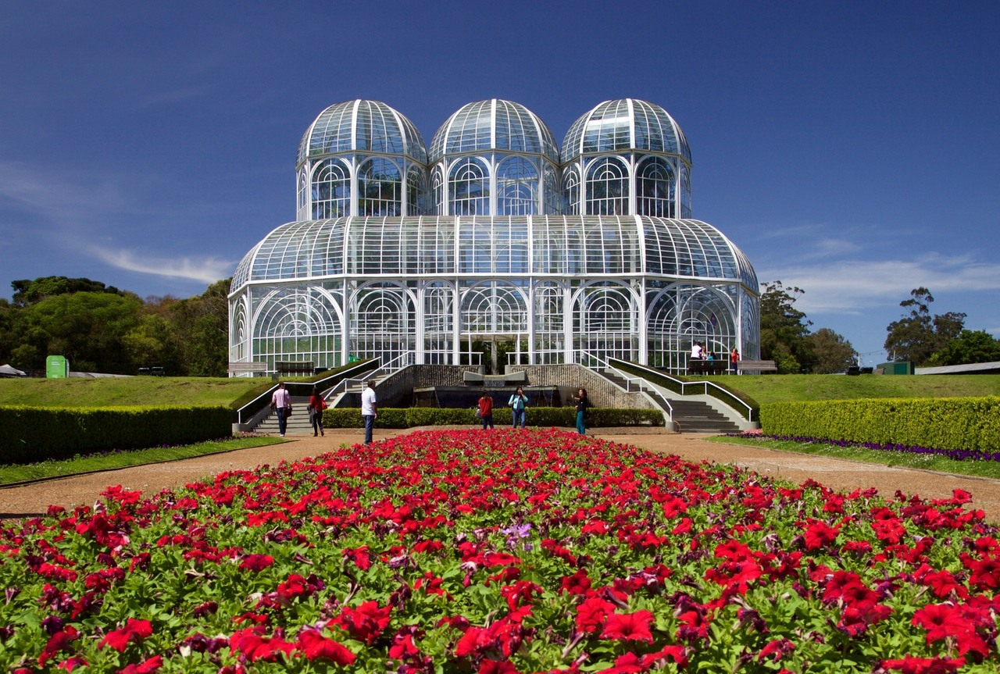
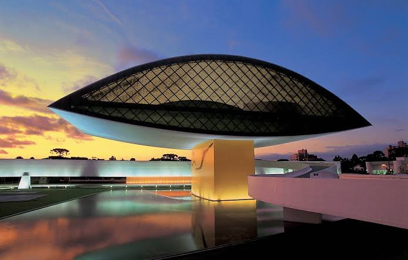
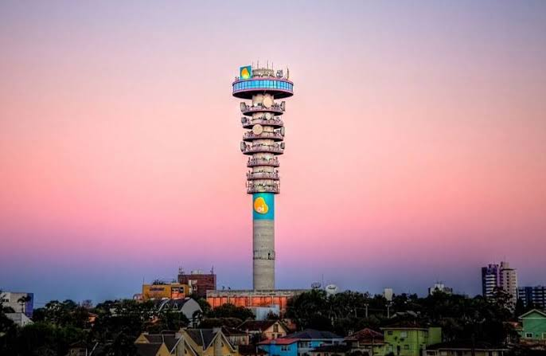
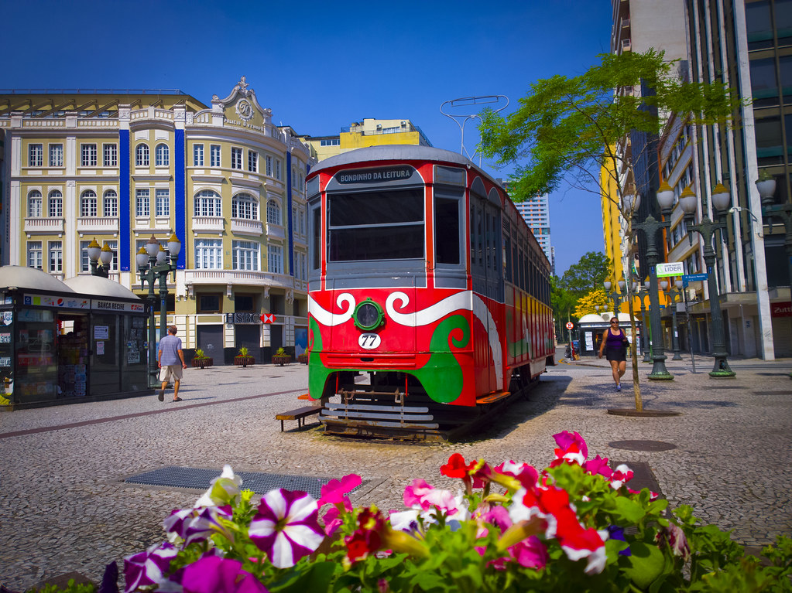

Parque
Jardim Botânico
Famoso pela estufa de ferro e vidro e pelos jardins em estilo francês, é um dos maiores cartões-postais da cidade.
Ver no mapa
Teatro
Ópera de Arame
Teatro de estrutura tubular e teto transparente, cercado por lago e mata nativa.
Ver no mapa
Parque
Parque Tanguá
Um parque com mirante, lagos e uma grande cascata, ótimo para passear e tirar fotos.
Ver no mapa
Museu
Museu Oscar Niemeyer
Conhecido como "Museu do Olho", reúne arte e arquitetura moderna em um só lugar.
Ver no mapa
Mirante
Torre Panorâmica
Mirante com vista panorâmica da cidade, perfeito para ver Curitiba do alto.
Ver no mapa
Centro histórico
Rua XV de Novembro
Calçadão no centro da cidade, uma das primeiras ruas exclusivas para pedestres do Brasil.
Ver no mapa